ברוכים הבאים לבנק המשפחתי שלכם! 👋
Oneflow Life היא מערכת שנועדה לתת להורים שליטה מלאה על התקציב המשפחתי, ובמקביל לחנך את הילדים להתנהלות כלכלית נכונה דרך חוויות, משימות ולמידה. המערכת מופעלת על ידי **familAI** - בינה מלאכותית מתקדמת שעוזרת לכם לחסוך זמן וכסף.
המדריך שלפניכם מפרט את כל יכולות המערכת לפי חלוקה לטאבים (לשוניות), ומסביר מה כל סוג משתמש (הורה מול ילד) יכול לראות ולבצע.
מסך ראשי (Feed)
מסך הבית של האפליקציה, המרכז את היתרה הנוכחית ומרכז עדכונים (פיד) של כל הפעילויות שהתרחשו בבנק המשפחתי לאחרונה.
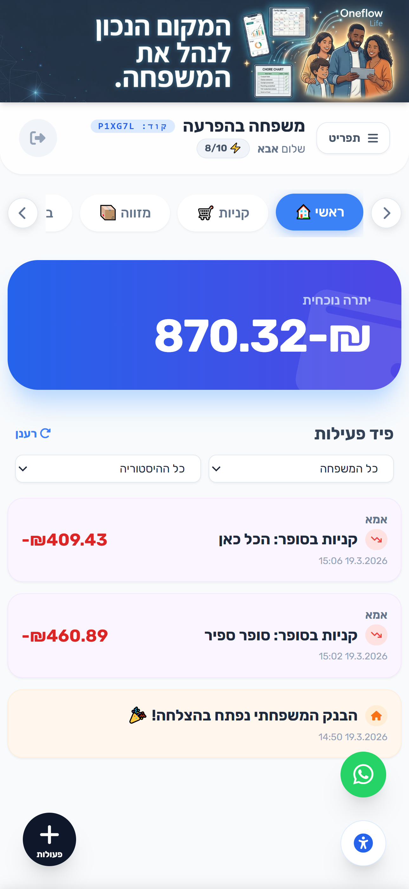
- תצוגת יתרה: רואים את סך היתרה הכללית (של כלל המנהלים יחד).
- פיד משפחתי: רואים את כל הפעולות של כל בני הבית - הוצאות, הכנסות, משימות שהושלמו, ומבחנים שבוצעו.
- סינון מתקדם: יכולים לסנן את הפיד לפי ילד ספציפי או לבחור טווח תאריכים (חודש/3 חודשים).
- תצוגת יתרה: רואים את סך הכסף הווירטואלי שצברו בארנק האישי שלהם.
- לביצוע: רואים בראש המסך משימות ומבחנים שהוקצו להם וממתינים לביצוע.
- פיד אישי: רואים אך ורק את הפעולות שלהם, כדי לשמור על פרטיות מול אחים אחרים. אין להם אפשרות סינון.
סופר חכם (Shop)
רשימת קניות דינמית ומשותפת לכל בני הבית. מחליפה את קבוצות הוואטסאפ המבולגנות ומאפשרת סריקת קבלות מבוססת AI.
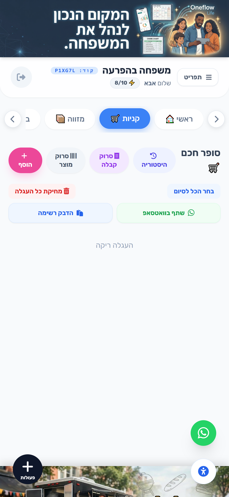
- ניהול העגלה: הוספה, עריכת מחירים, ומחיקת מוצרים. יכולים לסמן מוצרים שנקנו ולבצע "סיום וחיוב" שיוריד את הכסף מהתקציב.
- אישור בקשות: מוצרים שילדים הוסיפו יופיעו תחת "ממתינים לאישור" עד שההורה יאשר או ידחה אותם.
- סריקת קבלות (AI): אפשרות לצלם קבלה שלמה מהסופר. ה-AI (familAI) יזהה את המוצרים והמחירים ויכניס אותם אוטומטית למערכת!
- סריקת ברקוד/מוצר: צילום מוצר שנגמר בבית, וה-AI יזהה אותו ויוסיף לרשימה.
- הדבקת רשימה וייצוא: ניתן להדביק טקסט שלם של רשימה (והמערכת תפצל לשורות), או לייצא את הרשימה המוכנה לוואטסאפ.
- בקשת פריטים: יכולים להוסיף מוצרים (למשל חטיפים) לרשימה. המוצרים ייכנסו לסטטוס "ממתין לאישור הורה".
- צפייה ברשימה: רואים אילו מוצרים ההורים כבר הוסיפו לעגלה הכללית של הבית.
מזווה (Pantry)
ניהול מלאי הבית. כל מוצר שנקנה בסופר נכנס אוטומטית למזווה, וכך אפשר לעקוב אחרי מה שיש ומה שנגמר.
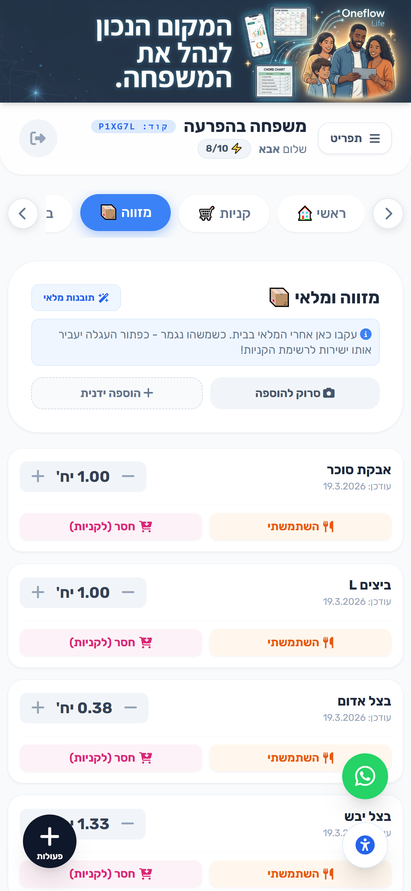
- צפייה במלאי: כולם יכולים לראות מה יש כרגע במקרר או בארונות.
- שימוש במוצרים: כשמישהו אוכל או משתמש במוצר, הוא יכול ללחוץ על "השתמשתי" ולהוריד את הכמות מהמלאי.
- העברה מהירה לקניות: אם מוצר נגמר, לחיצה על "חסר (לקניות)" תעביר אותו ישירות לעגלת הקניות של הסופר.
- הוספה חכמה: ניתן לצלם מוצר באמצעות המצלמה וה-AI יזהה ויוסיף אותו למזווה.
- תובנות מלאי: ה-AI מנתח את הרגלי הקנייה מול המזווה ומתריע להורים אם מוצר קבוע עומד להיגמר או אם יש כפילויות.
בנק (Bank)
הלב של החינוך הפיננסי במערכת. ניהול הארנקים הווירטואלים של הילדים, דמי כיס, חסכונות, הלוואות וריביות.
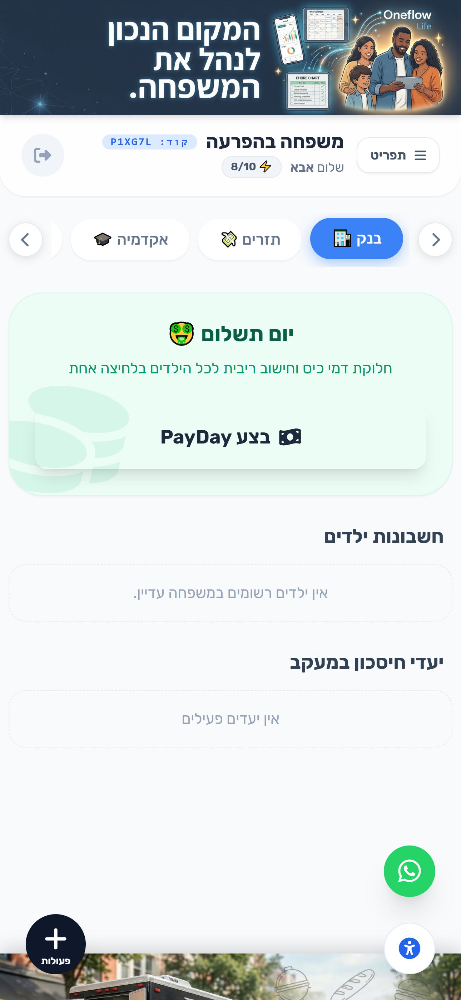
- צפייה בכולם: רואים את כל חשבונות הילדים, כולל היתרה של כל אחד.
- יום תשלום (PayDay): כפתור שבלחיצה אחת מחלק את דמי הכיס לכל הילדים ומחשב ריביות על חסכונות.
- קנסות ובונוסים: כפתור מהיר להורדה או הוספה של כסף מחשבון של ילד ספציפי עם הערה (למשל "בונוס על עזרה").
- הגדרות חשבון: קביעת גובה דמי הכיס השבועיים ואחוז הריבית לכל ילד.
- ניהול הלוואות ויעדים: אישור או דחייה של בקשות הלוואה שהילדים הגישו, ומעקב אחרי התקדמות יעדי החיסכון שלהם.
- כרטיס אישי: רואים "כרטיס אשראי" וירטואלי המציג את תנאי החשבון שלהם (דמי כיס, ריבית) ומד של "בזבוזים השבוע" שמתריע אם הם מוציאים יותר מדי כדי לא לאבד את הריבית.
- בקשת הלוואה: יכולים לבקש מההורים כסף "על החשבון" ולציין סיבה.
- יעדי חיסכון: פתיחת יעד (למשל: "אופניים חדשים - 500 ש״ח") והפקדת כסף מתוך הארנק שלהם לטובת היעד.
תזרים (Cashflow)
מעקב מלא אחרי כל התנועות הכספיות (הכנסות והוצאות) במערכת בצורת רשימה טבלאית מסודרת.
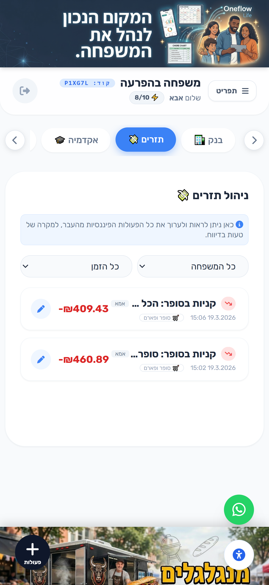
- שקיפות מלאה: רואים את כל התנועות שבוצעו על ידי כל בני המשפחה.
- עריכה ומחיקה: ההורים בלבד יכולים ללחוץ על כפתור עריכה כדי לשנות סכום, קטגוריה, או למחוק לחלוטין תנועה שגויה (פעולה שמעדכנת מידית את היתרה של המשתמש).
- סינונים: סינון לפי תאריכים, ולפי בן משפחה ספציפי.
- היסטוריה אישית: רואים רק את התנועות הכספיות של עצמם.
- צפייה בלבד: לילדים אין אפשרות למחוק או לערוך תנועות (כדי למנוע מניפולציות בארנק).
אקדמיה פיננסית (Academy)
מערכת למידה מבוססת משחק. הילדים עונים על מבחנים וחידונים ויכולים להרוויח כסף וירטואלי בתמורה ללמידה.
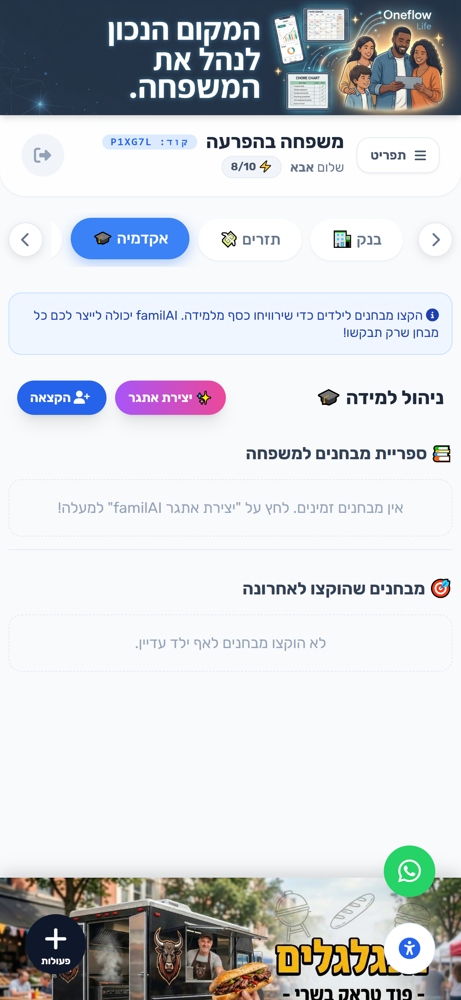
- יצירת מבחן ב-AI: לחיצה על "יצירת אתגר" מאפשרת לבחור גיל ונושא (למשל: "חיסכון מגיל צעיר"), ו-familAI תכתוב מבחן אמריקאי מרתק עם 5 שאלות באופן מיידי.
- הקצאה לילדים: ההורה בוחר איזה מבחן לתת לאיזה ילד, וקובע כמה שקלים הילד יקבל אם יעבור אותו בהצלחה.
- מעקב: צפייה בסטטוס המבחנים (מי עשה, מי נכשל, מי ממתין).
- ביצוע משימות לימודיות: גישה למבחנים שההורים הקצו להם. אם הילד עובר את ציון העובר (סף מוגדר מראש), הכסף מתווסף ישירות לארנק!
- אתגר אקראי: כפתור "הגרל אתגר מהיר" מאפשר לילד לבקש מבחן מספריית המבחנים הכללית בעצמו.
- מורה פרטית (Tutor): אם הילד טועה במבחן, יופיע כפתור המאפשר ל-familAI להסביר לו בדיוק למה הוא טעה ולמה התשובה השנייה נכונה, בשפה חיובית ומעודדת.
תקציב (Budget)
שליטה ומעקב על ההוצאות השוטפות לפי קטגוריות, למניעת חריגות ולתכנון פיננסי חכם.
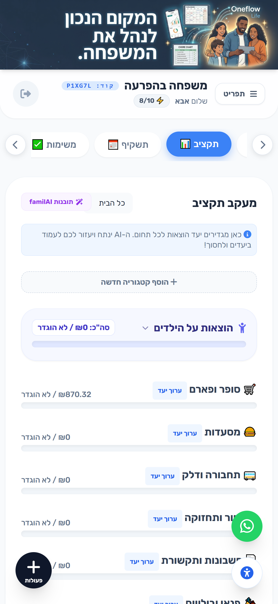
- הגדרת יעדים: יכולים לקבוע סכום יעד חודשי מקסימלי לכל קטגוריה (למשל: 2000 ש"ח לסופר, 500 ש"ח לדלק).
- מדדים חיים: בר התקדמות ויזואלי מראה כמה אחוזים מהתקציב נוצלו (משנה צבע לירוק, כתום, אדום בחריגה).
- סינון: אפשרות לראות את התקציב הכללי של הבית, או את ניצול התקציב האישי של הילדים.
- תובנות AI: ה-AI קורא את ההוצאות של החודש, מפיק "תקציר מנהלים" חכם להורים, ומציע איפה כדאי לקצץ.
- מעקב הוצאות אישי: הילדים רואים מדדים של ההוצאות שלהם בלבד ביחס לדמי הכיס שהם מקבלים, כדי שילמדו לא לבזבז את הכל בבת אחת.
תשקיף תזרים (Forecast)
מבט לעתיד המאפשר לתכנן מראש את החודשים והשנים הקרובות, למנוע הפתעות, ולראות מתי ניכנס למינוס.
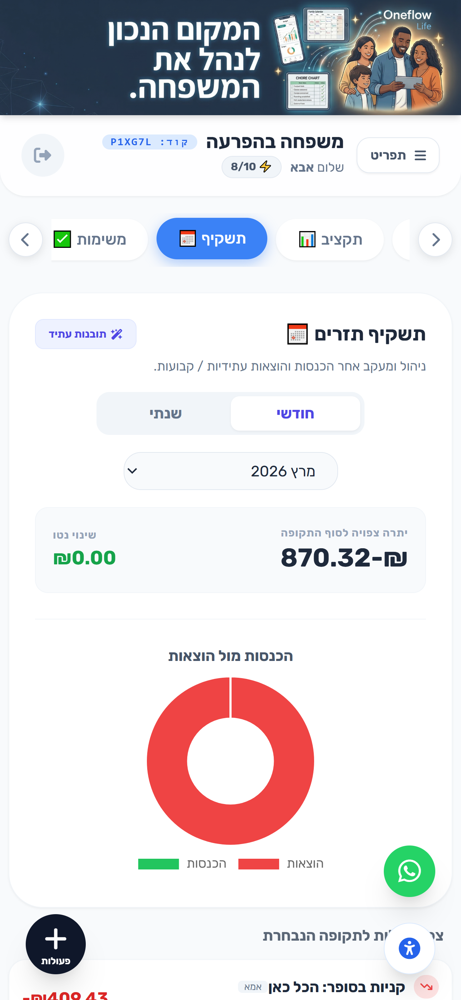
- חישוב יתרה עתידית: המערכת לוקחת את היתרה הנוכחית שלכם (מה שיש עכשיו), ומוסיפה/מחסירה את כל ההוצאות וההכנסות שמוגדרות כ"פעולה קבועה", כדי להציג כמה כסף יישאר לכם בחודשים הבאים.
- גרף עוגה: תצוגה חזותית של התפלגות הכנסות מול הוצאות לתקופה הנבחרת (חודשי או שנתי).
- תובנות עתיד: ה-AI מנתח את התחייבויות העבר והעתיד ומייעץ איך להיערך פיננסית.
- כאשר מוסיפים פעולה בכפתור הפלוס (+) בתחתית המסך, ניתן להגדיר אותה כ"פעולה קבועה" (למשל: משכורת, חוגים, ארנונה).
- רק פעולות קבועות משוקללות לתוך חישוב "היתרה העתידית" קדימה. הוצאות חד-פעמיות מופיעות בגרף רק כדי להראות על מה יצא הכסף החודש.
משימות (Tasks)
לוח משימות ביתי (כמו לסדר את החדר או לזרוק זבל) שמאפשר לילדים לעזור בבית ולהרוויח על כך כסף.
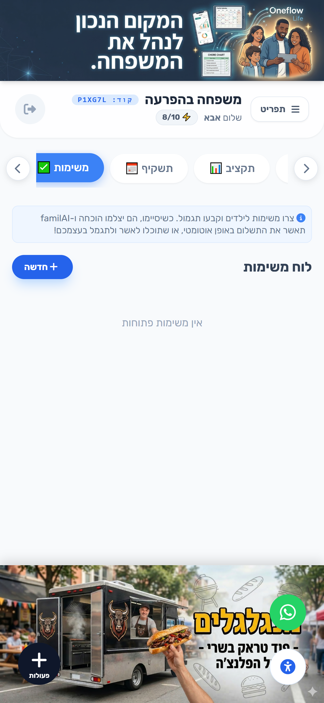
- יצירת משימות: הזנה ידנית (שם משימה, למי מוקצית, פרס, וימי תוקף).
- יצירה אוטומטית (AI): ההורה מקליד "עזרה לשישי", וה-AI מציע משימות מתאימות לגיל הילד ומתמחר אותן!
- אישור ביצוע: כשהילד מסיים, ההורה יכול לאשר ולשלם ידנית את הפרס (או לשנות את הסכום).
- אישור חכם (Vision AI): הילד יכול ללחוץ על "סיימתי", לצלם את מה שעשה (למשל את החדר המסודר), וה-AI יפענח את התמונה. אם ה-AI מרוצה, המשימה מאושרת אוטומטית והילד אף יקבל 10% בונוס נוסף!
- מעשה טוב: ילד יכול ללחוץ על "עשיתי מעשה טוב", לדווח על יוזמה אישית, ולבקש פרס עליה לאישור ההורה.
שף AI (Recipes)
פיצ'ר חכם שנועד לפתור את השאלה הנצחית "מה אוכלים היום?", תוך ניצול המוצרים שכבר קיימים אצלכם בבית.
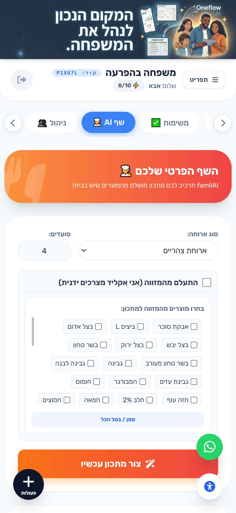
- סנכרון למזווה: המסך שולף אוטומטית את כל רשימת המוצרים שהכנסתם בטאב המזווה.
- הכנת ארוחה: אתם מסמנים אילו מוצרים תרצו לנצל, מגדירים את סוג הארוחה וכמות הסועדים - ומודל ה-AI יכתוב לכם מתכון מושלם צעד-אחר-צעד בעברית.
- הזנה ידנית: ניתן לבחור ב"התעלם מהמזווה" ופשוט להקליד מצרכים חופשי שיש לכם במקרר כדי לקבל מתכון.
ניהול משפחה (Members)
מסך הניהול הטכני של החשבון, מיועד בעיקר למנהלי הבית ולניהול ההרשאות.
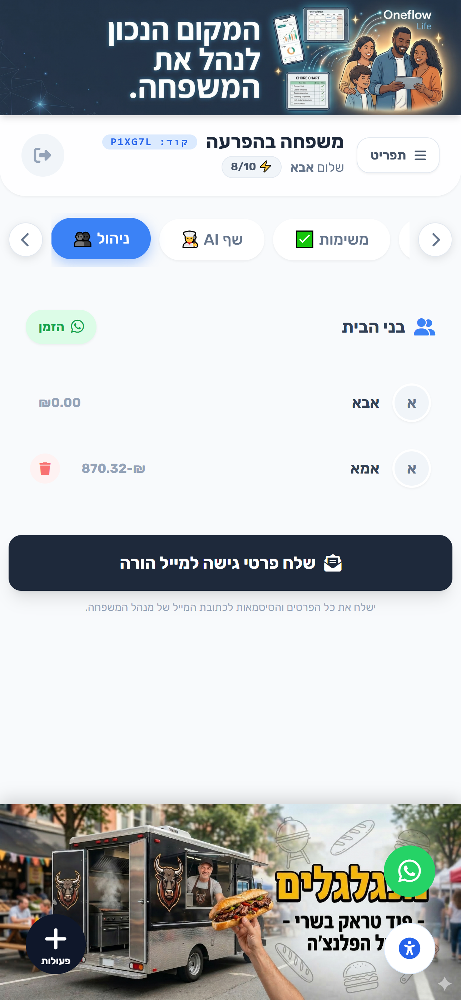
- הזמנה לוואטסאפ: כפתור מהיר שמייצר קישור הזמנה (הכולל את קוד המשפחה שלכם) שניתן לשלוח לילד או לבן/בת זוג בוואטסאפ כדי שיצטרפו למערכת.
- אישור משתמשים: מי שנרשם עם קוד המשפחה נכנס לסטטוס "ממתין", ורק מנהל יכול לאשר את כניסתו לאפליקציה כדי למנוע זרים.
- שליחת סיסמאות: כפתור ששולח למייל של מנהל המשפחה הראשי את רשימת כל המשתמשים והסיסמאות של הילדים במקרה שמישהו שכח.
הזמנות מעסקים 🍕
כאשר עסק שמשתמש ב-OneFlow BIZ (מסעדה, חנות, שירות) שולח לכם קישור — תוכלו להזמין ישירות מתוך הארנק המשפחתי, ולעקוב אחרי כל הזמנה ממקום אחד.

- הזמנה מהחנות: לחצו על קישור החנות שקיבלתם מהעסק → בחרו פריטים → ההזמנה נרשמת ישירות בטאב "הזמנות שלי".
- מעקב סטטוס: ראו בזמן אמת: ממתינה → מאושרת → בביצוע → מוכנה → נמסרה. כל שינוי מגיע עם פעמון.
- היסטוריה מלאה: כל הזמנה נשמרת לנצח בהיסטוריה — תאריך, פריטים, מחיר ושם העסק.
- צפייה בהזמנות: ילדים יכולים לראות הזמנות שההורה ביצע עבור המשפחה.
- הגשת תקלה: אם מוצר הגיע פגום — לחיצה על "דווח תקלה" שולחת בקשה לעסק ישירות מהאפליקציה.
הצעות מחיר מעסקים 📄
עסקי שירותים (רואה חשבון, עורך דין, שיפוצניק וכד') שולחים לכם הצעות מחיר ישירות לאפליקציה. אפשר לאשר, לבקש שינויים או להגיב — הכל בלי WhatsApp.

- אשר: ההצעה הופכת לפקודת עבודה בצד העסק — הם מתחילים לפעול.
- בקש הנחה: כתבו הסכום/אחוז ההנחה המבוקש — העסק יקבל הודעה ויעדכן.
- בקש שינויים: פרטו אילו פריטים להסיר/לשנות — ההצעה חוזרת אליכם מעודכנת.
- שלח הודעה: שאלה קצרה לעסק בלי לשנות את ההצעה.
- סרב: ההצעה נסגרת ומסומנת כ-"בוטלה".
- פעמון לעסק: העסק מקבל התראה מיידית על תגובתכם.
- ציר זמן: כל שלב בהצעה מוצג בציר זמן — מי שלח מה ומתי.
- גרסה מעודכנת: כשהעסק שולח הצעה מעודכנת — תקבלו פעמון חדש עם אפשרות לנסות שוב.
- המרה להזמנה: לאחר אישור — מופיעה הזמנה בטאב "הזמנות שלי" עם הסימון "הומרה מהצעה".
📌 איך מגיעה הצעה אלי?
העסק שולח את ההצעה ב-OneFlow ← אתם מקבלים פעמון 🔔 באפליקציה + הודעת Push ← לחצו על הפעמון ← נפתחת ההצעה המלאה עם כל הכפתורים. אין צורך לחפש מיילים או WhatsApp.